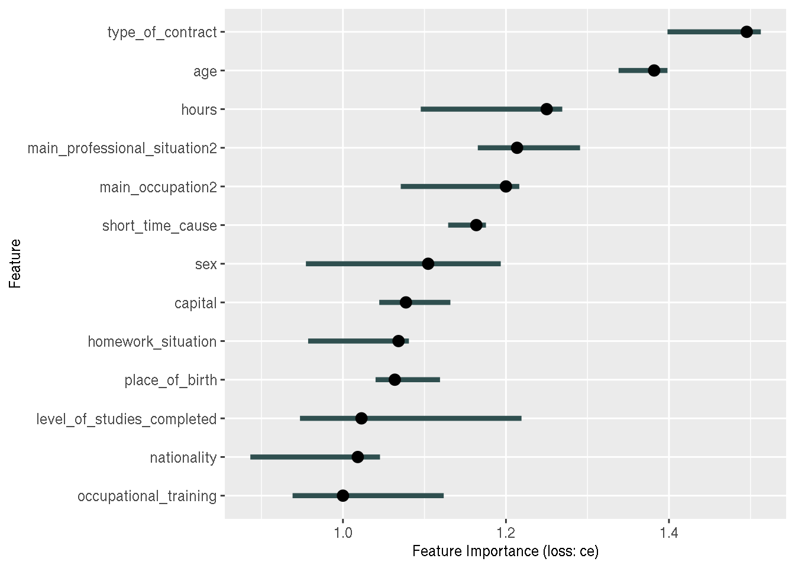
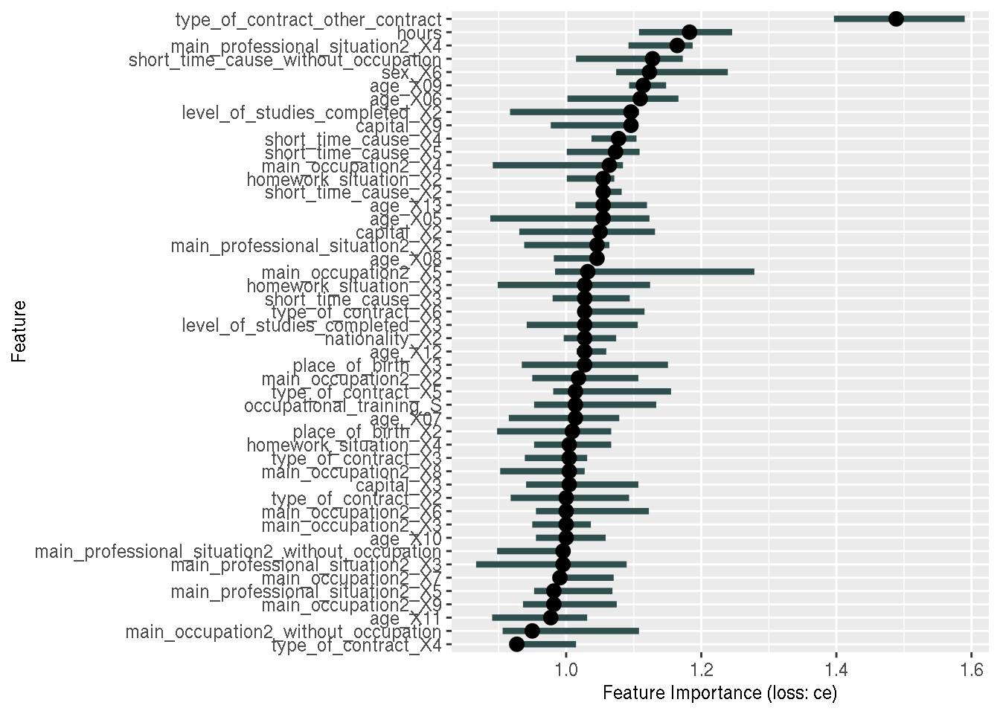

Explainbility of {tidymodels} models with {iml}
In my previous blog post, I have shown how you could use {tidymodels} to train several machine learning models. Now, let’s take a look at getting some explanations out of them, using the {iml} package. Originally I did not intend to create a separate blog post, but I have encountered… an issue, or bug, when using both {iml} and {tidymodels} and I felt that it was important that I write about it. Maybe it’s just me that’s missing something, and you, kind reader, might be able to give me an answer. But let’s first reload the models from last time (the same packages as on the previous blog post are loaded):
trained_models_list## [[1]]
## # 10-fold cross-validation
## # A tibble: 10 x 4
## splits id .metrics .notes
## * <list> <chr> <list> <list>
## 1 <split [23.6K/2.6K]> Fold01 <tibble [20 × 5]> <tibble [1 × 1]>
## 2 <split [23.6K/2.6K]> Fold02 <tibble [20 × 5]> <tibble [1 × 1]>
## 3 <split [23.6K/2.6K]> Fold03 <tibble [20 × 5]> <tibble [1 × 1]>
## 4 <split [23.6K/2.6K]> Fold04 <tibble [20 × 5]> <tibble [1 × 1]>
## 5 <split [23.6K/2.6K]> Fold05 <tibble [20 × 5]> <tibble [1 × 1]>
## 6 <split [23.6K/2.6K]> Fold06 <tibble [20 × 5]> <tibble [1 × 1]>
## 7 <split [23.6K/2.6K]> Fold07 <tibble [20 × 5]> <tibble [1 × 1]>
## 8 <split [23.6K/2.6K]> Fold08 <tibble [20 × 5]> <tibble [1 × 1]>
## 9 <split [23.6K/2.6K]> Fold09 <tibble [20 × 5]> <tibble [1 × 1]>
## 10 <split [23.6K/2.6K]> Fold10 <tibble [20 × 5]> <tibble [1 × 1]>
##
## [[2]]
## # 10-fold cross-validation
## # A tibble: 10 x 4
## splits id .metrics .notes
## * <list> <chr> <list> <list>
## 1 <split [23.6K/2.6K]> Fold01 <tibble [20 × 5]> <tibble [1 × 1]>
## 2 <split [23.6K/2.6K]> Fold02 <tibble [20 × 5]> <tibble [1 × 1]>
## 3 <split [23.6K/2.6K]> Fold03 <tibble [20 × 5]> <tibble [1 × 1]>
## 4 <split [23.6K/2.6K]> Fold04 <tibble [20 × 5]> <tibble [1 × 1]>
## 5 <split [23.6K/2.6K]> Fold05 <tibble [20 × 5]> <tibble [1 × 1]>
## 6 <split [23.6K/2.6K]> Fold06 <tibble [20 × 5]> <tibble [1 × 1]>
## 7 <split [23.6K/2.6K]> Fold07 <tibble [20 × 5]> <tibble [1 × 1]>
## 8 <split [23.6K/2.6K]> Fold08 <tibble [20 × 5]> <tibble [1 × 1]>
## 9 <split [23.6K/2.6K]> Fold09 <tibble [20 × 5]> <tibble [1 × 1]>
## 10 <split [23.6K/2.6K]> Fold10 <tibble [20 × 5]> <tibble [1 × 1]>
##
## [[3]]
## # 10-fold cross-validation
## # A tibble: 10 x 4
## splits id .metrics .notes
## * <list> <chr> <list> <list>
## 1 <split [23.6K/2.6K]> Fold01 <tibble [20 × 5]> <tibble [1 × 1]>
## 2 <split [23.6K/2.6K]> Fold02 <tibble [20 × 5]> <tibble [1 × 1]>
## 3 <split [23.6K/2.6K]> Fold03 <tibble [20 × 5]> <tibble [1 × 1]>
## 4 <split [23.6K/2.6K]> Fold04 <tibble [20 × 5]> <tibble [1 × 1]>
## 5 <split [23.6K/2.6K]> Fold05 <tibble [20 × 5]> <tibble [1 × 1]>
## 6 <split [23.6K/2.6K]> Fold06 <tibble [20 × 5]> <tibble [1 × 1]>
## 7 <split [23.6K/2.6K]> Fold07 <tibble [20 × 5]> <tibble [1 × 1]>
## 8 <split [23.6K/2.6K]> Fold08 <tibble [20 × 5]> <tibble [1 × 1]>
## 9 <split [23.6K/2.6K]> Fold09 <tibble [20 × 5]> <tibble [1 × 1]>
## 10 <split [23.6K/2.6K]> Fold10 <tibble [20 × 5]> <tibble [1 × 1]>
##
## [[4]]
## # 10-fold cross-validation
## # A tibble: 10 x 4
## splits id .metrics .notes
## * <list> <chr> <list> <list>
## 1 <split [23.6K/2.6K]> Fold01 <tibble [20 × 7]> <tibble [1 × 1]>
## 2 <split [23.6K/2.6K]> Fold02 <tibble [20 × 7]> <tibble [1 × 1]>
## 3 <split [23.6K/2.6K]> Fold03 <tibble [20 × 7]> <tibble [1 × 1]>
## 4 <split [23.6K/2.6K]> Fold04 <tibble [20 × 7]> <tibble [1 × 1]>
## 5 <split [23.6K/2.6K]> Fold05 <tibble [20 × 7]> <tibble [1 × 1]>
## 6 <split [23.6K/2.6K]> Fold06 <tibble [20 × 7]> <tibble [1 × 1]>
## 7 <split [23.6K/2.6K]> Fold07 <tibble [20 × 7]> <tibble [1 × 1]>
## 8 <split [23.6K/2.6K]> Fold08 <tibble [20 × 7]> <tibble [1 × 1]>
## 9 <split [23.6K/2.6K]> Fold09 <tibble [20 × 7]> <tibble [1 × 1]>
## 10 <split [23.6K/2.6K]> Fold10 <tibble [20 × 7]> <tibble [1 × 1]>
##
## [[5]]
## # 10-fold cross-validation
## # A tibble: 10 x 4
## splits id .metrics .notes
## * <list> <chr> <list> <list>
## 1 <split [23.6K/2.6K]> Fold01 <tibble [20 × 5]> <tibble [1 × 1]>
## 2 <split [23.6K/2.6K]> Fold02 <tibble [20 × 5]> <tibble [1 × 1]>
## 3 <split [23.6K/2.6K]> Fold03 <tibble [20 × 5]> <tibble [1 × 1]>
## 4 <split [23.6K/2.6K]> Fold04 <tibble [20 × 5]> <tibble [1 × 1]>
## 5 <split [23.6K/2.6K]> Fold05 <tibble [20 × 5]> <tibble [1 × 1]>
## 6 <split [23.6K/2.6K]> Fold06 <tibble [20 × 5]> <tibble [1 × 1]>
## 7 <split [23.6K/2.6K]> Fold07 <tibble [20 × 5]> <tibble [1 × 1]>
## 8 <split [23.6K/2.6K]> Fold08 <tibble [20 × 5]> <tibble [1 × 1]>
## 9 <split [23.6K/2.6K]> Fold09 <tibble [20 × 5]> <tibble [1 × 1]>
## 10 <split [23.6K/2.6K]> Fold10 <tibble [20 × 5]> <tibble [1 × 1]>Let’s see which of the models performed best (in cross-validation):
trained_models_list %>%
map(show_best, metric = "accuracy", n = 1)## [[1]]
## # A tibble: 1 x 7
## penalty mixture .metric .estimator mean n std_err
## <dbl> <dbl> <chr> <chr> <dbl> <int> <dbl>
## 1 6.57e-10 0.0655 accuracy binary 0.916 10 0.00179
##
## [[2]]
## # A tibble: 1 x 7
## mtry trees .metric .estimator mean n std_err
## <int> <int> <chr> <chr> <dbl> <int> <dbl>
## 1 13 1991 accuracy binary 0.929 10 0.00172
##
## [[3]]
## # A tibble: 1 x 7
## num_terms prune_method .metric .estimator mean n std_err
## <int> <chr> <chr> <chr> <dbl> <int> <dbl>
## 1 5 backward accuracy binary 0.904 10 0.00186
##
## [[4]]
## # A tibble: 1 x 9
## mtry trees tree_depth learn_rate .metric .estimator mean n std_err
## <int> <int> <int> <dbl> <chr> <chr> <dbl> <int> <dbl>
## 1 12 1245 12 0.0770 accuracy binary 0.929 10 0.00175
##
## [[5]]
## # A tibble: 1 x 7
## hidden_units penalty .metric .estimator mean n std_err
## <int> <dbl> <chr> <chr> <dbl> <int> <dbl>
## 1 10 0.00000307 accuracy binary 0.917 10 0.00209Seems like the second model, the random forest performed the best (highest mean accuracy with lowest standard error). So let’s retrain the model on the whole training set and see how it fares on the testing set:
rf_specs <- trained_models_list[[2]]Let’s save the best model specification in a variable:
best_rf_spec <- show_best(rf_specs, "accuracy", 1)Let’s now retrain this model, using a workflow:
best_rf_model <- rand_forest(mode = "classification", mtry = best_rf_spec$mtry,
trees = best_rf_spec$trees) %>%
set_engine("ranger")
preprocess <- recipe(job_search ~ ., data = pra) %>%
step_dummy(all_predictors())
pra_wflow_best <- workflow() %>%
add_recipe(preprocess) %>%
add_model(best_rf_model)
best_model_fitted <- fit(pra_wflow_best, data = pra_train)## Warning: The following variables are not factor vectors and will be ignored:
## `hours`and let’s take a look at the confusion matrix:
predictions <- predict(best_model_fitted, new_data = pra_test) %>%
bind_cols(pra_test)
predictions %>%
mutate(job_search = as.factor(job_search)) %>%
accuracy(job_search, .pred_class)## # A tibble: 1 x 3
## .metric .estimator .estimate
## <chr> <chr> <dbl>
## 1 accuracy binary 0.924predictions %>%
mutate(job_search = as.factor(job_search)) %>%
conf_mat(job_search, .pred_class) ## Truth
## Prediction N S
## N 2539 156
## S 64 149
We see that predicting class S (“Si”, meaning, “yes” in Spanish) is tricky. One would probably need to use techniques such as SMOTE to deal with this (see this blog post for more info). Anyways, this is not today’s topic.
Let’s say that we are satisfied with the model and want some explanations out of it. I have already blogged about it in the past, so if you want more details, you can read this blog post.
Now, what is important, is that I have defined a complete workflow to deal with the data preprocessing and then the training of the model. So I’ll be using this workflow as well to get my explainability. What I mean with this is the following: to get explanations, we need a model, and a way to get predictions out of it. As I have shown before, my fitted workflow is able to give me predictions. So I should have every needed ingredient; {iml}, the package that I am using for explainability provides several functions that work all the same; you first define an object that takes as an input the fitted model, the design matrix, the target variable and the prediction function. Let’s start with defining the design matrix and the target variable:
library("iml")
features <- pra_test %>%
select(-job_search)
target <- pra_test %>%
mutate(job_search = as.factor(job_search)) %>%
select(job_search)Now, let’s define the predict function:
predict_wrapper <- function(model, newdata){
workflows:::predict.workflow(object = model, new_data = newdata)
}
Because a workflow is a bit special, I need to define this wrapper function that wraps the workflows:::predict.workflow() function. Normally, users should not have to deal with this function; as you can see, to access it I had to use the very special ::: function. ::: permits users to access private functions (not sure if this is the right term; what I mean is that private functions are used internally by the package and should not be available to users. AFAIK, this is how these functions are called in Python). I tried simply using the predict() function, which works interactively but I was getting issues with it when I was providing it to the constructor below:
predictor <- Predictor$new(
model = best_model_fitted,
data = features,
y = target,
predict.fun = predict_wrapper
)
This creates a Predictor object from which I am now able to get explanations. For example, for feature importance, I would write the following:
feature_importance <- FeatureImp$new(predictor, loss = "ce")
plot(feature_importance)
And this is where I noticed that something was wrong; the variables we are looking at are categorical variables. So why am I not seeing the categories? Why is the most important variable the contract type, without the category of the contract type that is the most important? Remember that I created dummy variables using a recipe. So I was expecting something like type_of_contract_type_1, type_of_contract_type_2, etc… as variables.
This made me want to try to fit the model “the old way”, without using workflows. So for this I need to use the prep(), juice() and bake() functions, which are included in the {recipes} package. I won’t go into much detail, but the idea is that prep() is used to train the recipe, and compute whatever is needed to preprocess the data (such as means and standard deviations for normalization). For this, you should use the training data only. juice() returns the preprocessed training set, and bake() is then used to preprocessed a new data set, for instance the test set, using the same estimated parameters that were obtained with prep().
Using workflows avoids having to do these steps manually, but what I am hoping is that doing this manually will solve my issue. So let’s try:
# without workflows
trained_recipe <- prep(preprocess, training = pra_train)## Warning: The following variables are not factor vectors and will be ignored:
## `hours`pra_train_prep <- juice(trained_recipe)
best_model_fit <- fit(best_rf_model, job_search ~ ., data = pra_train_prep)
pra_test_bake_features <- bake(trained_recipe, pra_test) %>%
select(-job_search)
predict_wrapper2 <- function(model, newdata){
predict(object = model, new_data = newdata)
}
predictor2 <- Predictor$new(
model = best_model_fit,
data = pra_test_bake_features,
y = target,
predict.fun = predict_wrapper2
)
feature_importance2 <- FeatureImp$new(predictor2, loss = "ce")
plot(feature_importance2)
Eureka! As you can see, the issue is now solved; we now have all the variables that were used for training the model, also in our explanations. I don’t know exactly what’s going on; is this a bug? Is it because the {workflows} package makes this process too streamlined that it somehow rebuilds the features and then returns the results? I have no idea. In any case, it would seem that for the time being, doing the training and explanations without the {workflows} package is the way to go if you require explanations as well.